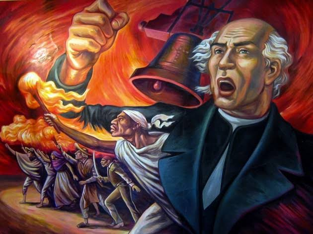
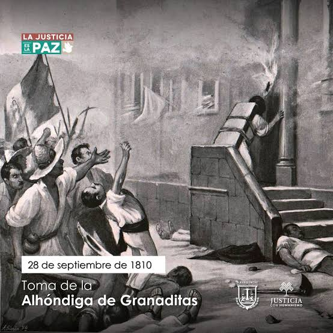
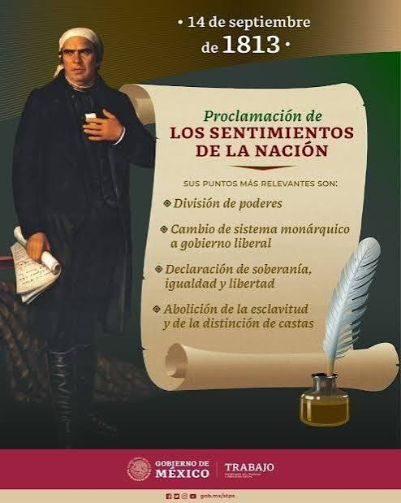
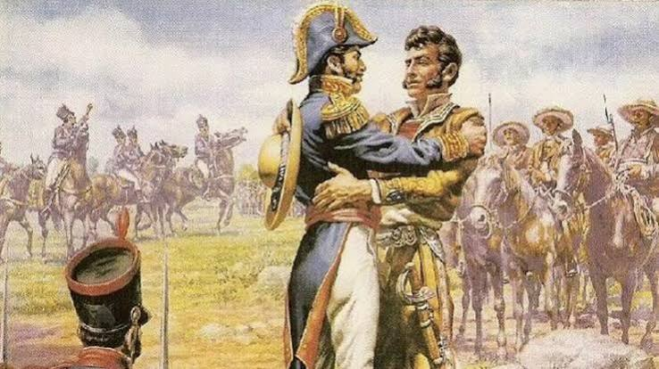
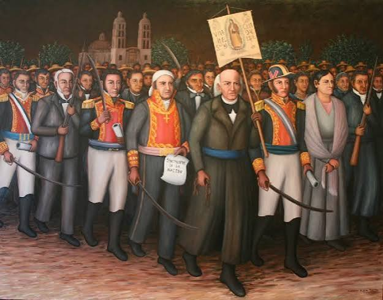

El cura Miguel Hidalgo y Costilla toco la campana de su parroquia y convoco al pueblo a levantarse contra el mal gobierno español. Junto a Ignacio Allende y Juan Aldama dio el famoso Grito de Dolores, iniciando la lucha por la independencia despues de 300 años de dominacion española.

El ejercito insurgente llego a Guanajuato donde los españoles se escondian en la Alhondiga de Granaditas. Un minero conocido como El Pipila se puso una losa en la espalda para protegerse de las balas y quemo la puerta de la Alhondiga, logrando que los insurgentes ganaran su primera gran batalla.

Jose Maria Morelos y Pavon organizo el Congreso de Anahuac y presento el documento Sentimientos de la Nacion. Ahi declaro que Mexico debe ser independiente de España para siempre, que la soberania viene del pueblo y que se deben acabar las castas y la esclavitud.

Despues de 10 años de guerra, Vicente Guerrero que seguia luchando en el sur, se reunio con Agustin de Iturbide que era jefe del ejercito realista. En el abrazo de Acatempan decidieron perdonarse y unirse para formar el Ejercito Trigarante y lograr juntos la independencia.

El Ejercito Trigarante entro triunfante a la Ciudad de Mexico encabezado por Iturbide y Guerrero. Con la entrada del ejercito se dio por terminada la guerra de independencia despues de 11 años de lucha. Al dia siguiente se firmo el Acta de Independencia de Mexico.
